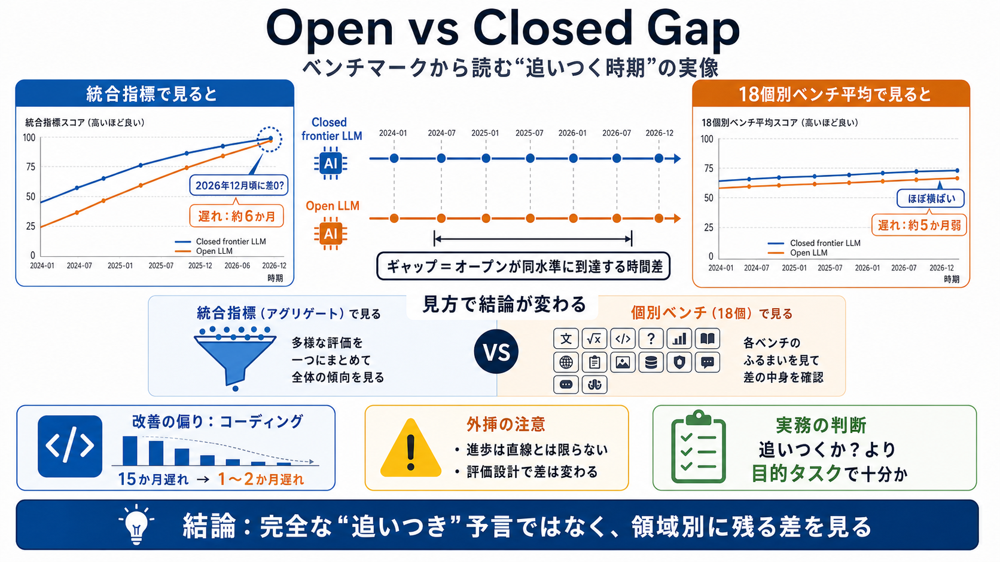

Artificial Analysis Intelligence Index Benchmark 2026 - BenchLM.ai
# Artificial Analysis Intelligence Index. ## Benchmark score on Artificial Analysis Intelligence Index — June 16, 2026. …

# Artificial Analysis Intelligence Index. ## Benchmark score on Artificial Analysis Intelligence Index — June 16, 2026. …
# Artificial Analysis Benchmarking Methodology. Artificial Analysis performs intelligence, quality, performance and pric…
### Artificial Analysis Intelligence Index v4.1. Artificial Analysis Intelligence Index combines a comprehensive suite o…
Skip to main contentOpen models vs closed models: discrepancy in benchmarks vs real-world performance. # Open models vs …
In our latest Doubleword blog we analyse 18 different benchmarks to try and figure out when open source LLMs will finall…